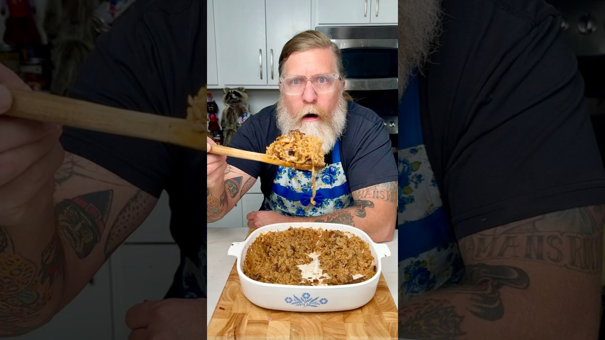

Reconstructed from the video's narration (spoken recipe) — the video has no written recipe in its description. Quantities and steps below are only those actually stated out loud; see "Gaps in this export" for what wasn't specified.
Source: Drew Cooks – YouTube
1 onion, sliced
Oil, for the pan
1 1/4 cups long-grain rice
1 can beef broth
1 can French onion soup
1 stick unsalted butter
Parsley, to garnish (optional)
Preheat the oven to 350°F.
Slice the onion. Sauté the slices in a hot oiled pan until golden and caramelized, then set aside.
In a 1 3/4–2 quart baking dish, combine the long-grain rice, the can of beef broth, and the can of French onion soup. Stir.
Spread the caramelized onions over the top in an even layer.
Cut the stick of butter into pats and scatter them over the top.
Cover the dish and bake at 350°F for 45 minutes.
Remove the lid and check the liquid. If there's a lot left, return it to the oven uncovered until the rice is tender and the liquid is absorbed.
Garnish with parsley if desired. Serve.
Gap in this export: Can sizes for the beef broth and French onion soup
Gap in this export: Amount of oil for caramelizing the onion
Gap in this export: Number of servings